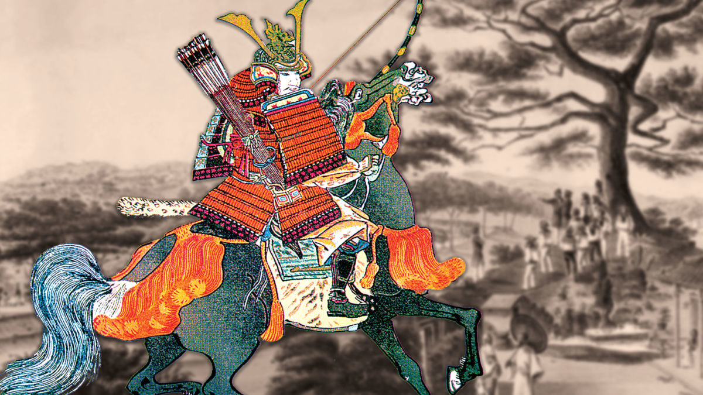

Inicios de Okinawa
Okinawa fue una vez un país independiente que fue gobernado por el Reino de Ryukyu y floreció a través del comercio con China. Después de la invasión de Satsuma en 1609, Ryukyu se convirtió en parte del sistema de shogunato de Japón.
Imagen de historynet.com
Se convirtió en prefectura de Japón debido a la abolición del sistema Han y al establecimiento del sistema de prefectura, que ocurrió en 1879.
En diciembre de 2000, nueve sitios, incluidas las ruinas del castillo de Shuri y las ruinas del castillo de Nakagusuku, se registraron como sitios del patrimonio mundial y se denominaron "sitios de Gusuku y propiedades relacionadas del reino de Ryukyu".
Okinawa es uno de los líderes mundiales en longevidad. Algunos de los factores que han sostenido esta longevidad incluyen: un clima cálido, la personalidad tolerante de los lugareños, el espíritu de “yumaru” (ayudarse unos a otros) y la cultura gastronómica tradicional. En cuanto a la cultura alimentaria en particular, la idea de "dieta sana, cuerpo sano" ha sido ampliamente aceptado en Okinawa, influenciado por los intercambios culturales con China.
Imagen de CNN.com
Festivales
El Eisa es un tipo de artes escénicas tradicionales de Okinawa. Puedes verlo en festivales de verano y eventos especiales. Se dice que el origen de este arte escénico se originó como una forma de despedir a los espíritus ancestrales, que descendieron para el Festival Bon del 13 al 15 de julio en el calendario lunar, y son guiados al mundo de los espíritus golpeando fuertemente el taiko. La coreografía heroica de la danza, el sonido de los tambores (paranku) batiendo con júbilo y el sonido nostálgico del instrumento de tres cuerdas (sanshin) capturarán los corazones de la multitud incondicionalmente.
Fuentes de informacion: pref.okinawa.jp